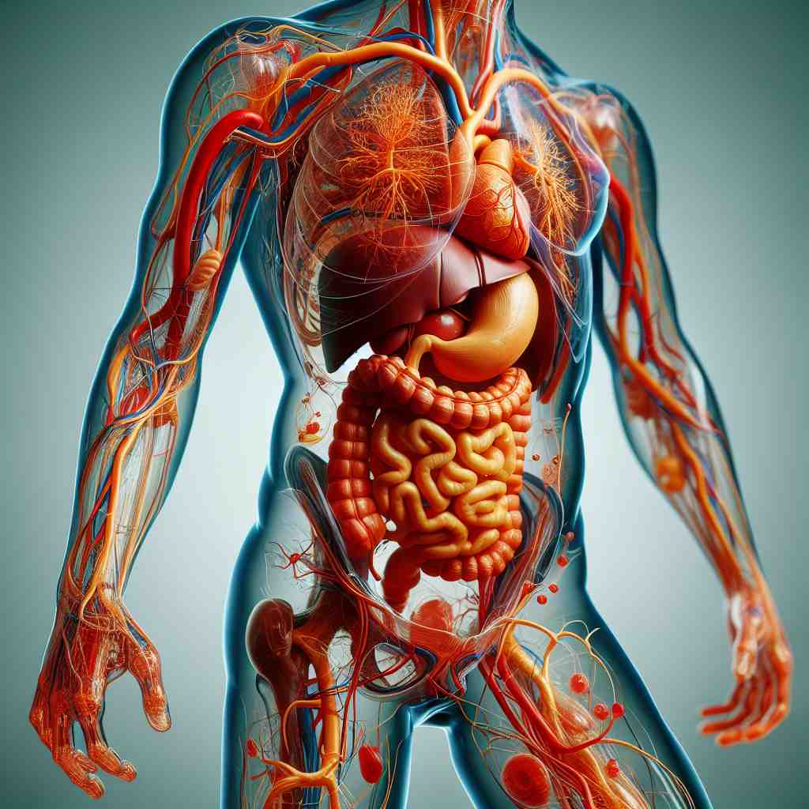

🗝️ n. the physical structure of a person or animal
🖼️ 在一个阳光明媚的海滩上，一个男孩正在沙滩上玩耍。他赤脚奔跑着，阳光洒在他的皮肤上，汗水顺着他的身体流下，体现了'body'作为人或动物物理结构的含义。
🔍 想象'body'是一个人的身体。这个核心概念可以延伸到其他事物的主体部分，一群人形成的整体，液体的厚度，甚至是赋予形态的动作。通过联想人体的特征，如结构、整体性和实体感，可以更容易理解和记忆'body'的各种含义。

💬 The doctor is performing a body examination to check the patient's health.

💬 Athletes work hard to train their body for better performance.

💬 The human body has many important organs for survival.
💬 The diagram shows the human body structure and its systems.
🔗 1. bodily: 身体上的 2. embody: 体现，具体化 3. antibody: 抗体
🗝️ n. the main part of something
🖼️ 在一家汽车制造厂内，工人们正在安装汽车的引擎。引擎被安放在汽车的主架构上，这个主架构便是车辆的'body'，是汽车最重要的部分。
💬 The body of the essay contains the main arguments.
❓ 类比人体的主要部分
🗝️ n. a group of people working together
🖼️ 在一个会议室里，公司董事会的成员们正在讨论年度计划。他们团结一心，为共同的目标努力，形成一个有效的'body'，即合作的团队。
💬 The faculty body voted on the new policy.
❓ 比喻多人组成的整体如同一个身体
🗝️ n. the fullness or thickness of a liquid
🖼️ 在一家咖啡馆里，咖啡师正在为顾客展示如何品尝咖啡。她解释道，这种独特的咖啡有着浓厚的'body'，即液体的丰厚和浓度，让人回味无穷。
💬 This wine has a rich body and smooth texture.
❓ 比喻液体的厚度如同身体的实体感
🗝️ n. a corpse
🖼️ 在一个侦探小说中，侦探赫尔克里·波洛站在犯罪现场，凝视着地上的'body'。他的目光充满了思索，准备揭开这具尸体背后的谜团。
💬 The bodies of the victims were recovered from the crash site.
❓ 指失去生命的身体
🗝️ v. to give shape or form to something
🖼️ 在一间艺术工作室里，雕塑家正用双手精心雕刻着一块大理石。随着每一刀的雕琢，艺术家的创意在石头上'body'出形状，使之从无形变得有形。
💬 The sculptor bodied forth his vision in clay.
❓ 赋予某物以身体般的形态